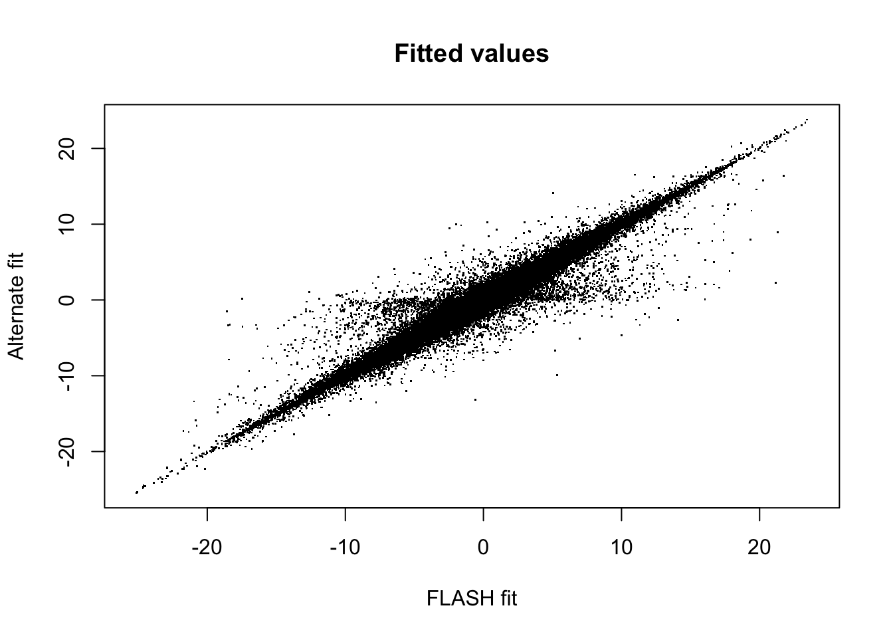
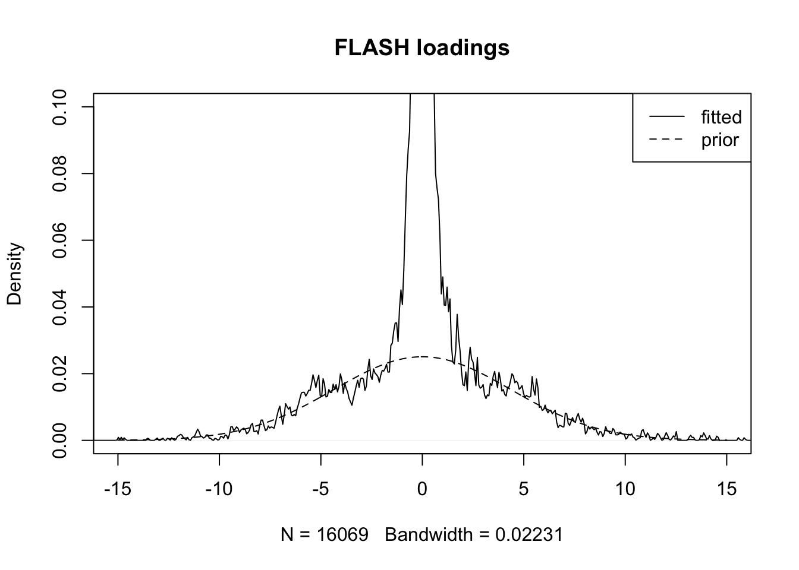
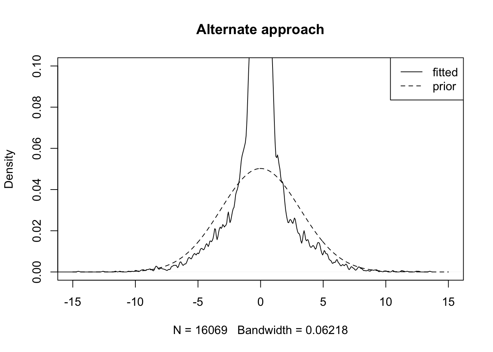

Last updated: 2018-07-19
workflowr checks: (Click a bullet for more information) ✔ R Markdown file: up-to-date
Great! Since the R Markdown file has been committed to the Git repository, you know the exact version of the code that produced these results.
✔ Environment: empty
Great job! The global environment was empty. Objects defined in the global environment can affect the analysis in your R Markdown file in unknown ways. For reproduciblity it’s best to always run the code in an empty environment.
✔ Seed:
set.seed(20180714)
The command set.seed(20180714) was run prior to running the code in the R Markdown file. Setting a seed ensures that any results that rely on randomness, e.g. subsampling or permutations, are reproducible.
✔ Session information: recorded
Great job! Recording the operating system, R version, and package versions is critical for reproducibility.
✔ Repository version: bc2681e
wflow_publish or wflow_git_commit). workflowr only checks the R Markdown file, but you know if there are other scripts or data files that it depends on. Below is the status of the Git repository when the results were generated:
Ignored files:
Ignored: .DS_Store
Ignored: .Rhistory
Ignored: .Rproj.user/
Ignored: docs/.DS_Store
Ignored: docs/figure/.DS_Store
Unstaged changes:
Modified: analysis/flash_em.Rmd
| File | Version | Author | Date | Message |
|---|---|---|---|---|
| Rmd | bc2681e | Jason Willwerscheid | 2018-07-19 | wflow_publish(“analysis/alt_alg.Rmd”) |
Here I implement the algorithm described in a previous note and compare results with FLASH.
Click “Code” to view the implementation.
# INITIALIZATION FUNCTIONS ------------------------------------------
add_new_altfl <- function(data, fl, seed=1) {
set.seed(seed)
altfl <- list()
altfl$tau <- fl$tau
altfl$Rk <- flashr:::flash_get_R(data, fl)
n <- nrow(fl$tau)
p <- ncol(fl$tau)
altfl$wl <- rep(0.1, n)
altfl$wf <- rep(0.1, p)
altfl$mul <- rnorm(n)
altfl$muf <- rnorm(p)
altfl$s2l <- rep(1, n)
altfl$s2f <- rep(1, p)
altfl$al <- altfl$af <- 1
altfl$pi0l <- altfl$pi0f <- 0.9
altfl$KL <- sum(unlist(fl$KL_l) + unlist(fl$KL_f))
return(altfl)
}
fl_to_altfl <- function(data, fl, k) {
altfl <- list()
altfl$tau <- fl$tau
altfl$Rk <- flashr:::flash_get_R(data, fl)
altfl$al <- fl$gl[[k]]$a
altfl$pi0l <- fl$gl[[k]]$pi0
altfl$af <- fl$gf[[k]]$a
altfl$pi0f <- fl$gf[[k]]$pi0
s2 = 1/(fl$EF2[, k] %*% t(fl$tau))
s = sqrt(s2)
Rk = flashr:::flash_get_Rk(data, fl, k)
x = fl$EF[, k] %*% t(Rk * fl$tau) * s2
w = 1 - fl$gl[[k]]$pi0
a = fl$gl[[k]]$a
altfl$wl <- ebnm:::wpost_normal(x, s, w, a)
altfl$mul <- ebnm:::pmean_cond_normal(x, s, a)
altfl$s2l <- ebnm:::pvar_cond_normal(s, a)
s2 = 1/(fl$EL2[, k] %*% fl$tau)
s = sqrt(s2)
Rk = flashr:::flash_get_Rk(data, fl, k)
x = fl$EL[, k] %*% (Rk * fl$tau) * s2
w = 1 - fl$gf[[k]]$pi0
a = fl$gf[[k]]$a
altfl$wf <- ebnm:::wpost_normal(x, s, w, a)
altfl$muf <- ebnm:::pmean_cond_normal(x, s, a)
altfl$s2f <- ebnm:::pvar_cond_normal(s, a)
altfl$KL <- sum(unlist(fl$KL_l)[-k] + unlist(fl$KL_f)[-k])
return(altfl)
}
altfl_to_fl <- function(altfl, fl, k) {
fl$EL[, k] <- compute_EX(altfl$wl, altfl$mul)
fl$EL2[, k] <- compute_EX2(altfl$wl, altfl$mul, altfl$s2l)
fl$EF[, k] <- compute_EX(altfl$wf, altfl$muf)
fl$EF2[, k] <- compute_EX2(altfl$wf, altfl$muf, altfl$s2f)
fl$gl[[k]] <- list(pi0 = altfl$pi0l, a = altfl$al)
fl$gf[[k]] <- list(pi0 = altfl$pi0f, a = altfl$af)
fl$ebnm_fn_l <- fl$ebnm_fn_f <- "alt"
fl$ebnm_param_l <- fl$ebnm_param_f <- list()
fl$tau <- altfl$tau
return(fl)
}
# OBJECTIVE FUNCTION ------------------------------------------------
compute_obj <- function(altfl) {
with(altfl, {
EL <- compute_EX(wl, mul)
EL2 <- compute_EX2(wl, mul, s2l)
EF <- compute_EX(wf, muf)
EF2 <- compute_EX2(wf, muf, s2f)
obj <- rep(0, 8)
obj[1] <- sum(0.5 * log(tau / (2 * pi)))
obj[2] <- sum(-0.5 * (tau * (Rk^2 - 2 * Rk * outer(EL, EF) + outer(EL2, EF2))))
tmp <- (1 - wl) * (log(pi0l) - log(1 - wl))
obj[3] <- sum(tmp[!is.nan(tmp)])
tmp <- wl * (log(1 - pi0l) - log(wl))
obj[4] <- sum(tmp[!is.nan(tmp)])
obj[5] <- sum(0.5 * wl * (log(al) + log(s2l) + 1 - al * (mul^2 + s2l)))
tmp <- (1 - wf) * (log(pi0f) - log(1 - wf))
obj[6] <- sum(tmp[!is.nan(tmp)])
tmp <- wf * (log(1 - pi0f) - log(wf))
obj[7] <- sum(tmp[!is.nan(tmp)])
obj[8] <- sum(0.5 * wf * (log(af) + log(s2f) + 1 - af * (muf^2 + s2f)))
return(sum(obj) + KL)
})
}
compute_EX <- function(w, mu) {
return(as.vector(w * mu))
}
compute_EX2 <- function(w, mu, sigma2) {
return(as.vector(w * (mu^2 + sigma2)))
}
# UPDATE FUNCTIONS --------------------------------------------------
update_a <- function(w, EX2) {
return(sum(w) / sum(EX2))
}
update_pi0 <- function(w) {
return(sum(1 - w) / length(w))
}
update_mul <- function(a, tau, Rk, EF, EF2) {
n <- nrow(tau)
p <- ncol(tau)
numer <- rowSums(tau * Rk * matrix(EF, nrow=n, ncol=p, byrow=TRUE))
denom <- a + rowSums(tau * matrix(EF2, nrow=n, ncol=p, byrow=TRUE))
return(numer / denom)
}
update_muf <- function(a, tau, Rk, EL, EL2) {
n <- nrow(tau)
p <- ncol(tau)
numer <- colSums(tau * Rk * matrix(EL, nrow=n, ncol=p, byrow=FALSE))
denom <- a + colSums(tau * matrix(EL2, nrow=n, ncol=p, byrow=FALSE))
return(numer / denom)
}
update_s2l <- function(a, tau, EF2) {
n <- nrow(tau)
p <- ncol(tau)
return(1 / (a + rowSums(tau * matrix(EF2, nrow=n, ncol=p, byrow=TRUE))))
}
update_s2f <- function(a, tau, EL2) {
n <- nrow(tau)
p <- ncol(tau)
return(1 / (a + colSums(tau * matrix(EL2, nrow=n, ncol=p, byrow=FALSE))))
}
update_wl <- function(a, pi0, mu, sigma2, tau, Rk, EF, EF2) {
C1 <- log(1 - pi0) - log(pi0)
C2 <- 0.5 * (log(a) + log(sigma2) - a * (mu^2 + sigma2) + 1)
C3 <- rowSums(tau * (Rk * outer(mu, EF) - 0.5 * outer(mu^2 + sigma2, EF2)))
C <- C1 + C2 + C3
return(1 / (1 + exp(-C)))
}
update_wf <- function(a, pi0, mu, sigma2, tau, Rk, EL, EL2) {
C1 <- log(1 - pi0) - log(pi0)
C2 <- 0.5 * (log(a) + log(sigma2) - a * (mu^2 + sigma2) + 1)
C3 <- colSums(tau * (Rk * outer(EL, mu) - 0.5 * outer(EL2, mu^2 + sigma2)))
C <- C1 + C2 + C3
return(1 / (1 + exp(-C)))
}
# ALGORITHM ---------------------------------------------------------
update_tau <- function(altfl) {
within(altfl, {
EL <- compute_EX(wl, mul)
EL2 <- compute_EX2(wl, mul, s2l)
EF <- compute_EX(wf, muf)
EF2 <- compute_EX2(wf, muf, s2f)
R2 <- Rk^2 - 2 * Rk * outer(EL, EF) + outer(EL2, EF2)
tau <- matrix(1 / colMeans(R2), nrow=nrow(tau), ncol=ncol(tau),
byrow=TRUE)
})
}
update_loadings_post <- function(altfl) {
within(altfl, {
EF <- compute_EX(wf, muf)
EF2 <- compute_EX2(wf, muf, s2f)
mul <- update_mul(al, tau, Rk, EF, EF2)
s2l <- update_s2l(al, tau, EF2)
wl <- update_wl(al, pi0l, mul, s2l, tau, Rk, EF, EF2)
})
}
update_loadings_prior <- function(altfl) {
within(altfl, {
EL2 <- compute_EX2(wl, mul, s2l)
al <- update_a(wl, EL2)
pi0l <- update_pi0(wl)
})
}
update_factor_post <- function(altfl) {
within(altfl, {
EL <- compute_EX(wl, mul)
EL2 <- compute_EX2(wl, mul, s2l)
muf <- update_muf(af, tau, Rk, EL, EL2)
s2f <- update_s2f(af, tau, EL2)
wf <- update_wf(af, pi0f, muf, s2f, tau, Rk, EL, EL2)
})
}
update_factor_prior <- function(altfl) {
within(altfl, {
EF2 <- compute_EX2(wf, muf, s2f)
af <- update_a(wf, EF2)
pi0f <- update_pi0(wf)
})
}
do_one_update <- function(altfl) {
obj <- rep(0, 5)
altfl <- update_tau(altfl)
obj[1] <- compute_obj(altfl)
altfl <- update_loadings_post(altfl)
obj[2] <- compute_obj(altfl)
altfl <- update_loadings_prior(altfl)
obj[3] <- compute_obj(altfl)
altfl <- update_factor_post(altfl)
obj[4] <- compute_obj(altfl)
altfl <- update_factor_prior(altfl)
obj[5] <- compute_obj(altfl)
return(list(altfl = altfl, obj = obj))
}
optimize_alt_fl <- function(altfl, tol = .01, verbose = FALSE) {
obj <- compute_obj(altfl)
diff <- Inf
while (diff > tol) {
tmp <- do_one_update(altfl)
new_obj <- tmp$obj[length(tmp$obj)]
diff <- new_obj - obj
obj <- new_obj
if (verbose) {
message(paste("Objective:", obj))
}
altfl <- tmp$altfl
}
return(altfl)
}Using the same dataset as in previous investigations, I fit a FLASH object with four factors (recall that it’s the fourth factor that has been causing problems during loadings updates):
load("./data/before_bad.Rdata")
# devtools::install_github("stephenslab/flashr")
devtools::load_all("/Users/willwerscheid/GitHub/flashr")Loading flashrfl <- flash_add_greedy(data, Kmax=4, verbose=FALSE)fitting factor/loading 1fitting factor/loading 2fitting factor/loading 3fitting factor/loading 4The objective as computed by FLASH is:
flash_get_objective(data, fl)[1] -1297148I now convert the fourth factor to an “altfl” object. The objective as computed by the alternate method is:
altfl <- fl_to_altfl(data, fl, 4)
compute_obj(altfl)[1] -1288461Next, I optimize the altfl object:
altfl <- optimize_alt_fl(altfl, verbose=TRUE)Objective: -1267406.2685275Objective: -1260756.13822147Objective: -1257939.29612236Objective: -1257300.63730127Objective: -1257110.55550233Objective: -1257016.7314057Objective: -1256963.52277046Objective: -1256932.3695305Objective: -1256914.13309796Objective: -1256902.74309918Objective: -1256895.1068788Objective: -1256889.8003563Objective: -1256886.07583612Objective: -1256883.4080515Objective: -1256881.44636624Objective: -1256879.9749153Objective: -1256878.85630259Objective: -1256877.99813191Objective: -1256877.33547644Objective: -1256876.82128467Objective: -1256876.42074587Objective: -1256876.10774166Objective: -1256875.8624804Objective: -1256875.66985319Objective: -1256875.5182584Objective: -1256875.39874455Objective: -1256875.3043765Objective: -1256875.22976218Objective: -1256875.17069613Objective: -1256875.12388932Objective: -1256875.08676316Objective: -1256875.05729166Objective: -1256875.03387997Objective: -1256875.0152705Objective: -1256875.00047012Objective: -1256874.98869349Objective: -1256874.9793189Finally, I put the altfl object back into the fourth factor of the flash object.
fl2 <- altfl_to_fl(altfl, fl, 4)The fits are very different. For priors on both factors and loadings, the altfl fit favors less sparsity (smaller spikes, i.e., smaller pi0) and more shrinkage (narrower slabs, i.e., greater a).
list(loadings = fl$gl[[4]], alt_loadings = fl2$gl[[4]])$loadings
$loadings$pi0
[1] 0.7252435
$loadings$a
[1] 0.05228744
$alt_loadings
$alt_loadings$pi0
[1] 0.6079064
$alt_loadings$a
[1] 0.1251973list(factors = fl$gf[[4]], alt_factors = fl2$gf[[4]])$factors
$factors$pi0
[1] 0.3667051
$factors$a
[1] 23.14738
$alt_factors
$alt_factors$pi0
[1] 0.1302886
$alt_factors$a
[1] 36.28001A scatterplot comparing the fitted fourth factor/loading appears as follows:
fitted <- flash_get_fitted_values(fl)
fitted2 <- flash_get_fitted_values(fl2)
minval <- min(c(fitted, fitted2))
maxval <- max(c(fitted, fitted2))
plot(fitted, fitted2, pch='.',
xlab="FLASH fit", ylab="Alternate fit",
xlim=c(minval, maxval), ylim=c(minval, maxval),
main="Fitted values")
To see what’s going on, I fit the estimated loadings against the estimated prior on the loadings. For the FLASH fit:
plot(density(fl$EL[, 4]), xlim=c(-15, 15), ylim=c(0, 0.1),
main="FLASH loadings")
grid <- seq(-15, 15, by=.05)
y <- (1 - fl$gl[[4]]$pi0) * dnorm(grid, 0, 1/sqrt(fl$gl[[4]]$a))
lines(grid, y, lty=2)
legend("topright", legend = c("fitted", "prior"), lty = c(1, 2))
For the alternate approach:
plot(density(fl2$EL[, 4]), xlim=c(-15, 15), ylim=c(0, 0.1),
main="Alternate approach")
grid <- seq(-15, 15, by=.05)
y <- (1 - fl2$gl[[4]]$pi0) * dnorm(grid, 0, 1/sqrt(fl2$gl[[4]]$a))
lines(grid, y, lty=2)
legend("topright", legend = c("fitted", "prior"), lty = c(1, 2))
It seems almost as if FLASH were fitting the model \[ l_i \sim^{iid} g_l + e, \] where \(e\) is some error term, rather than the model \[ l_i \sim^{iid} g_l. \] This might explain why the prior gets pulled up more by the fitted values in the latter approach.
sessionInfo()R version 3.4.3 (2017-11-30)
Platform: x86_64-apple-darwin15.6.0 (64-bit)
Running under: macOS Sierra 10.12.6
Matrix products: default
BLAS: /Library/Frameworks/R.framework/Versions/3.4/Resources/lib/libRblas.0.dylib
LAPACK: /Library/Frameworks/R.framework/Versions/3.4/Resources/lib/libRlapack.dylib
locale:
[1] en_US.UTF-8/en_US.UTF-8/en_US.UTF-8/C/en_US.UTF-8/en_US.UTF-8
attached base packages:
[1] stats graphics grDevices utils datasets methods base
other attached packages:
[1] flashr_0.5-12
loaded via a namespace (and not attached):
[1] Rcpp_0.12.17 pillar_1.2.1 plyr_1.8.4
[4] compiler_3.4.3 git2r_0.21.0 workflowr_1.0.1
[7] R.methodsS3_1.7.1 R.utils_2.6.0 iterators_1.0.9
[10] tools_3.4.3 testthat_2.0.0 digest_0.6.15
[13] tibble_1.4.2 evaluate_0.10.1 memoise_1.1.0
[16] gtable_0.2.0 lattice_0.20-35 rlang_0.2.0
[19] Matrix_1.2-12 foreach_1.4.4 commonmark_1.4
[22] yaml_2.1.17 parallel_3.4.3 ebnm_0.1-12
[25] withr_2.1.1.9000 stringr_1.3.0 roxygen2_6.0.1.9000
[28] xml2_1.2.0 knitr_1.20 devtools_1.13.4
[31] rprojroot_1.3-2 grid_3.4.3 R6_2.2.2
[34] rmarkdown_1.8 ggplot2_2.2.1 ashr_2.2-10
[37] magrittr_1.5 whisker_0.3-2 backports_1.1.2
[40] scales_0.5.0 codetools_0.2-15 htmltools_0.3.6
[43] MASS_7.3-48 assertthat_0.2.0 softImpute_1.4
[46] colorspace_1.3-2 stringi_1.1.6 lazyeval_0.2.1
[49] munsell_0.4.3 doParallel_1.0.11 pscl_1.5.2
[52] truncnorm_1.0-8 SQUAREM_2017.10-1 R.oo_1.21.0 This reproducible R Markdown analysis was created with workflowr 1.0.1